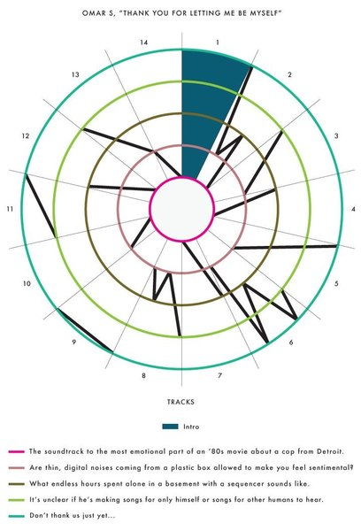
CRVI001361Andrew Kuo - Charting 'Thank You for Letting Me Be Myself' by Omar S
Chart for The New York Times · 2013-06-25 · 2013
Chart for The New York Times · 2013-06-25 · 2013
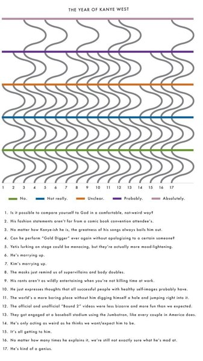
CRVI001360Andrew Kuo - Charted: The Year of Kanye West
Chart for The New York Times · 2013-12-13 · 2013
Chart for The New York Times · 2013-12-13 · 2013

CRVI000743George Greaves - Untitled
Illustration
Illustration

CRVI001091Kim Laughton - Untitled
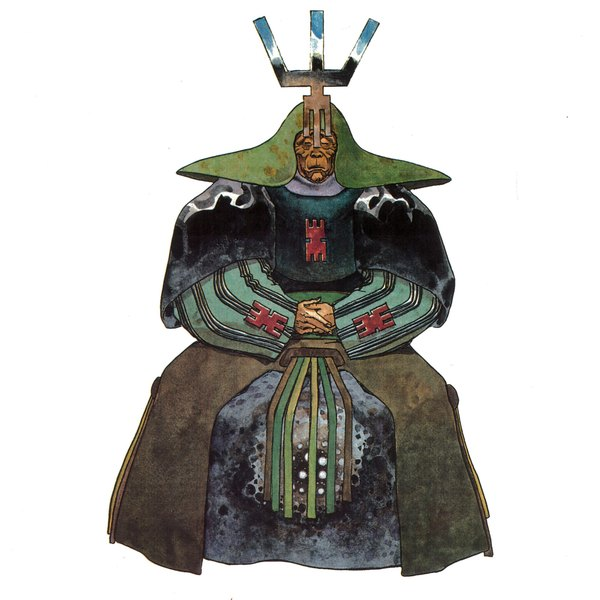
CRVI001356unattributed - Dune production bible — costume design, robed figure
Illustrator unidentified · Jodorowsky's Dune production bible, 1975 · 1975
Illustrator unidentified · Jodorowsky's Dune production bible, 1975 · 1975

CRVI001088Kim Laughton - Untitled

CRVI000875John Provencher - [Bloomberg, weather]
Bloomberg Businessweek
Bloomberg Businessweek

CRVI001092Kim Laughton - Untitled

CRVI000835Mona Chalabi - Congratulations, You’re A Parent! Here’s $1. Now Take This Quiz…
New York Magazine
New York Magazine
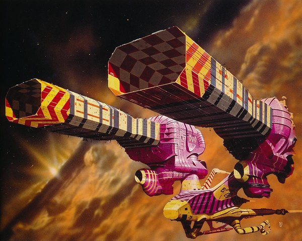
CRVI001340Chris Foss - Dune — a spacecraft
Illustration by Chris Foss
Illustration by Chris Foss
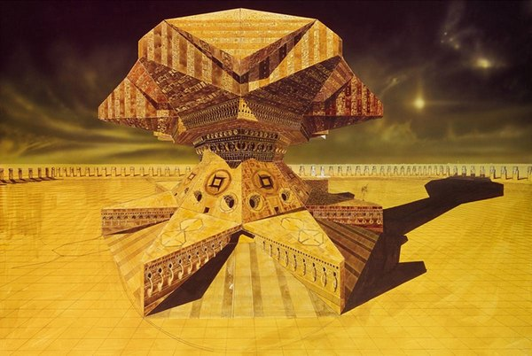
CRVI001339unattributed - Dune — a palace
Maker unidentified
Maker unidentified

CRVI001099Kim Laughton - Untitled
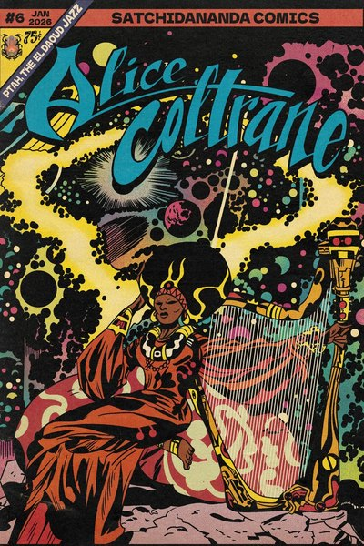
CRVI001257Alejandro Torrecilla - Satchidananda Comics #6 — Alice Coltrane
Illustration by Alejandro Torrecilla · as Torre Pentel · 2026
Illustration by Alejandro Torrecilla · as Torre Pentel · 2026

CRVI000731Robert Beatty - Untitled
Illustration
Illustration

CRVI000742George Greaves - Untitled
Illustration
Illustration
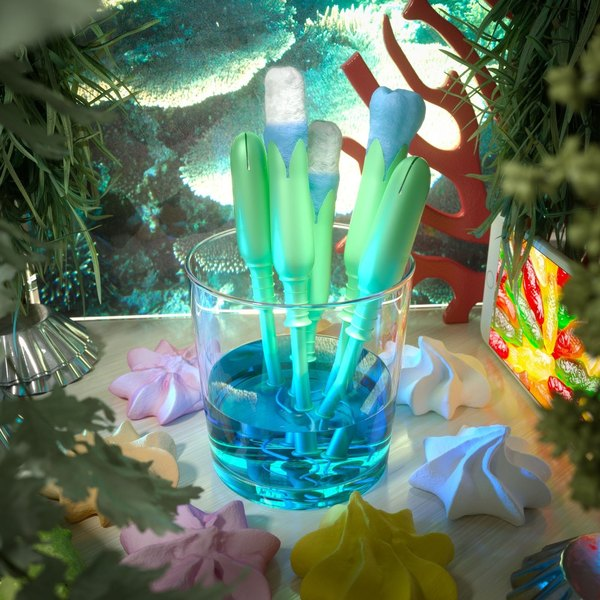
CRVI001086Kim Laughton - Untitled
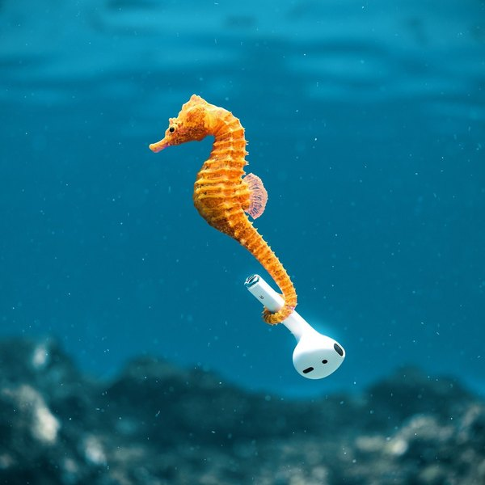
CRVI001093Kim Laughton - Untitled
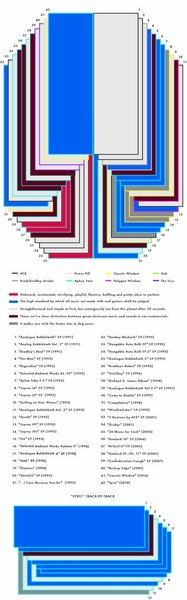
CRVI001363Andrew Kuo - Decoding a Trickster — Aphex Twin, 'Syro'
Chart for The New York Times · 2014-09-28 · 2014
Chart for The New York Times · 2014-09-28 · 2014
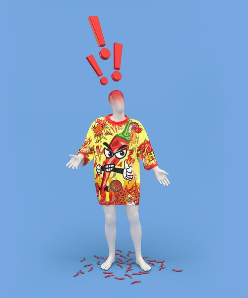
CRVI001073Kim Laughton - Untitled
Published by Raddlounge
Published by Raddlounge

CRVI001327Peter Lloyd - Tron — concept art, the Solar Sailer
Illustration by Peter Lloyd · 1982
Illustration by Peter Lloyd · 1982

CRVI001074Kim Laughton - Untitled

CRVI001076Kim Laughton - Untitled
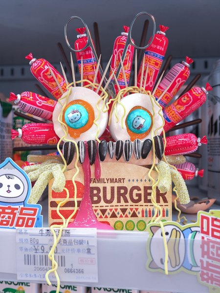
CRVI001081Kim Laughton - Untitled
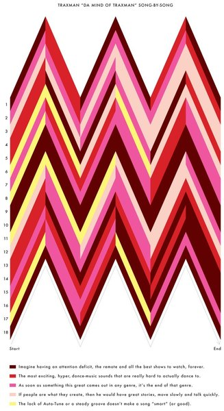
CRVI001362Andrew Kuo - Charting Traxman
Chart for The New York Times · 2012-06-18 · 2012
Chart for The New York Times · 2012-06-18 · 2012

CRVI000874John Provencher - The Russian Bot Army That Conquered Online Poker
Bloomberg Businessweek, 20 September 2024 · 2024
Bloomberg Businessweek, 20 September 2024 · 2024
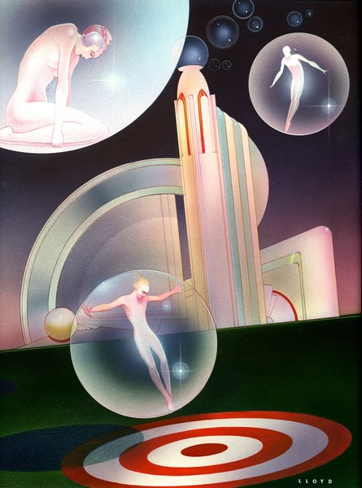
CRVI001323Peter Lloyd - Untitled airbrush illustration
Illustration by Peter Lloyd
Illustration by Peter Lloyd

CRVI001097Kim Laughton - Untitled

CRVI001100Kim Laughton - Untitled

CRVI001080Kim Laughton - Untitled
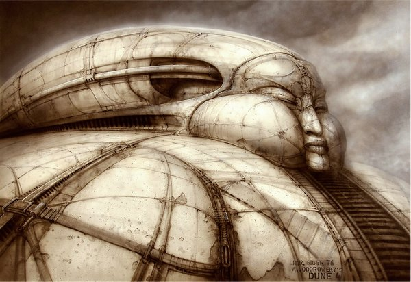
CRVI001355H.R. Giger - Dune production bible — Harkonnen structure
Illustration by H.R. Giger · Jodorowsky's Dune production bible, 1975 · 1976
Illustration by H.R. Giger · Jodorowsky's Dune production bible, 1975 · 1976

CRVI001089Kim Laughton - Untitled

CRVI001095Kim Laughton - Untitled

CRVI000749Jim Cherry - Mondo Face
Airbrush illustration
Airbrush illustration
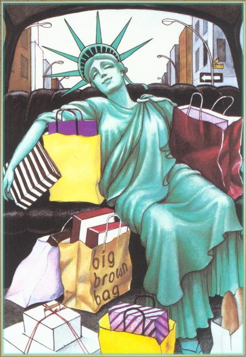
CRVI001182unattributed - Statue of Liberty with Bloomingdale's shopping bags
Designer unrecorded
Designer unrecorded
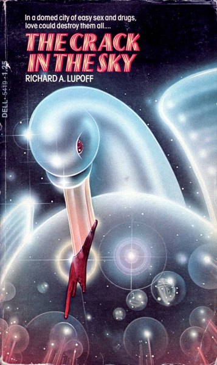
CRVI001322Peter Lloyd - The Crack in the Sky, by Richard A. Lupoff
Illustration by Peter Lloyd · Dell · 1976
Illustration by Peter Lloyd · Dell · 1976
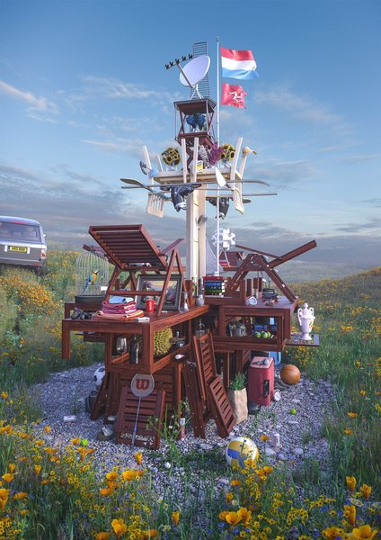
CRVI001090Kim Laughton - Untitled

CRVI001083Kim Laughton - Untitled
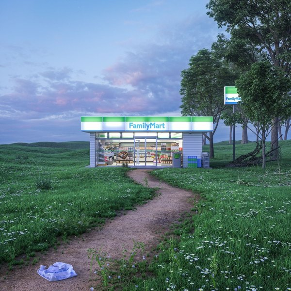
CRVI001085Kim Laughton - Untitled

CRVI001094Kim Laughton - Untitled
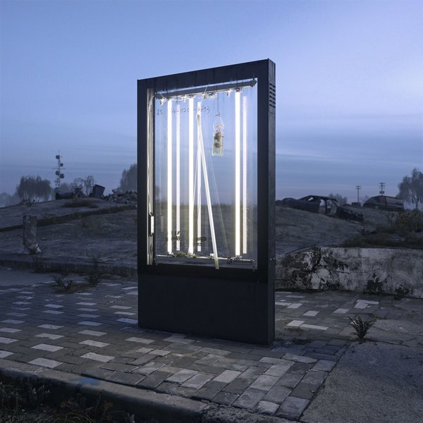
CRVI001096Kim Laughton - Untitled

CRVI001324Peter Lloyd - Tron — concept art, city grid
Illustration by Peter Lloyd · 1982
Illustration by Peter Lloyd · 1982

CRVI001077Kim Laughton - Untitled
Published by Real Life
Published by Real Life

CRVI001087Kim Laughton - Untitled

CRVI001078Kim Laughton - Untitled

CRVI001347unattributed - Tron — concept art, the throne
Maker unidentified · 1982
Maker unidentified · 1982
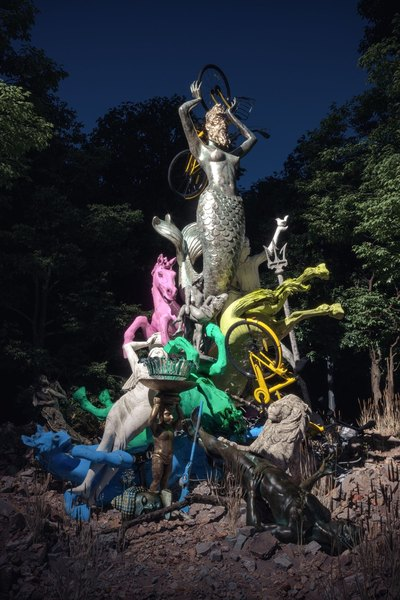
CRVI001084Kim Laughton - Untitled

CRVI001082Kim Laughton - Untitled